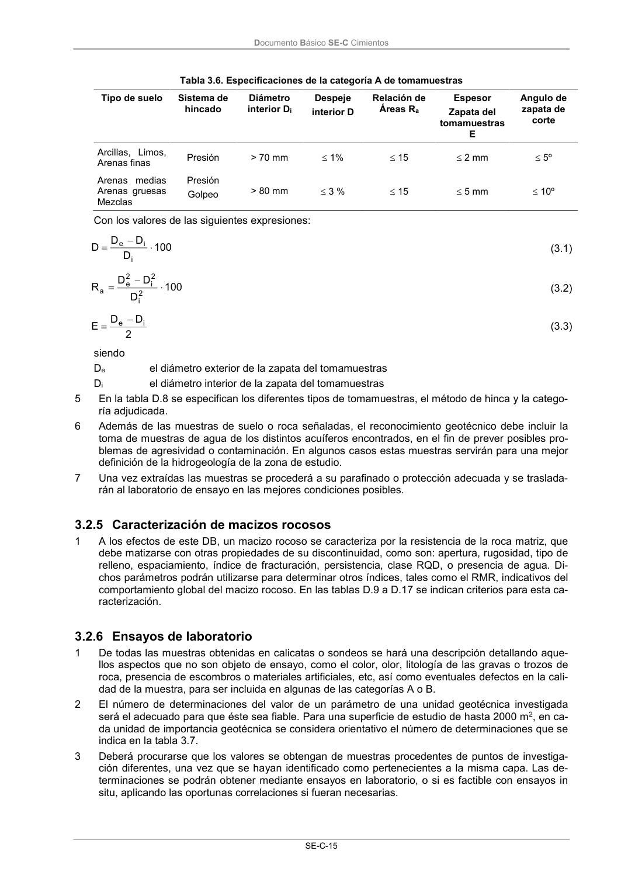

DB-SE-C Cimientos · edición 2019-12-20 · capa oficial
Documento DB-SE-C-oficial · SHA-256 del PDF a71133f4b0dca253e45ea3071c70f2a512354bcc5cd841bf89b1a502f567ac5e
Página física 20 de 165.
Copia fiel del PDF fuente · Fuente oficial
Ficha de la disposición en la fuente oficial
Formato: Texto de la página (Markdown)
Documento Básico SE-C Cimientos SE-C-15 Tabla 3.6. Especificaciones de la categoría A de tomamuestras Tipo de suelo Sistema de hincado Diámetro interior Di Despeje interior D Relación de Áreas Ra Espesor Zapata del tomamuestras E Angulo de zapata de corte Arcillas, Limos, Arenas finas Presión > 70 mm 1% 15 2 mm 5º Arenas medias Arenas gruesas Mezclas Presión Golpeo > 80 mm 3 % 15 5 mm 10º Con los valores de las siguientes expresiones: 100 D D D D i i e (3.1) 100 D D D R 2 i 2 i 2 e a (3.2) 2 D D E i e (3.3) siendo De el diámetro exterior de la zapata del tomamuestras Di el diámetro interior de la zapata del tomamuestras 5 En la tabla D.8 se especifican los diferentes tipos de tomamuestras, el método de hinca y la catego- ría adjudicada. 6 Además de las muestras de suelo o roca señaladas, el reconocimiento geotécnico debe incluir la toma de muestras de agua de los distintos acuíferos encontrados, en el fin de prever posibles pro- blemas de agresividad o contaminación. En algunos casos estas muestras servirán para una mejor definición de la hidrogeología de la zona de estudio. 7 Una vez extraídas las muestras se procederá a su parafinado o protección adecuada y se traslada- rán al laboratorio de ensayo en las mejores condiciones posibles. 3.2.5 Caracterización de macizos rocosos 1 A los efectos de este DB, un macizo rocoso se caracteriza por la resistencia de la roca matriz, que debe matizarse con otras propiedades de su discontinuidad, como son: apertura, rugosidad, tipo de relleno, espaciamiento, índice de fracturación, persistencia, clase RQD, o presencia de agua. Di- chos parámetros podrán utilizarse para determinar otros índices, tales como el RMR, indicativos del comportamiento global del macizo rocoso. En las tablas D.9 a D.17 se indican criterios para esta ca- racterización. 3.2.6 Ensayos de laboratorio 1 De todas las muestras obtenidas en calicatas o sondeos se hará una descripción detallando aque- llos aspectos que no son objeto de ensayo, como el color, olor, litología de las gravas o trozos de roca, presencia de escombros o materiales artificiales, etc, así como eventuales defectos en la cali- dad de la muestra, para ser incluida en algunas de las categorías A o B. 2 El número de determinaciones del valor de un parámetro de una unidad geotécnica investigada será el adecuado para que éste sea fiable. Para una superficie de estudio de hasta 2000 m2, en ca- da unidad de importancia geotécnica se considera orientativo el número de determinaciones que se indica en la tabla 3.7. 3 Deberá procurarse que los valores se obtengan de muestras procedentes de puntos de investiga- ción diferentes, una vez que se hayan identificado como pertenecientes a la misma capa. Las de- terminaciones se podrán obtener mediante ensayos en laboratorio, o si es factible con ensayos in situ, aplicando las oportunas correlaciones si fueran necesarias.
